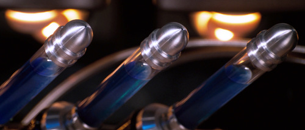

Hey guys and welcome back today I will be explaining about the super soldier serum but many people don't know about this serum but what if I told you that this is the thing which gave captain america his powers.Today I will be talkng about who created supersoldier serum and what was the purpose of it plus we will see who others created

super soldier serum is a serum that makes a human to a peak human because of which capltain america is overpowerd. The supersoldier serum was created by abhraham erskine who was working for weapons plus then he was kiddnaped by hydra click here to know about hydra led by johann schmidt. Erskine was fored to inject the serum in johann schmidt even after he told that the serum needs few enhacements schmidt got his super powers but the side affect was that it ripped his skin because of which only the skull was left and the skull turned red sice then he was called red skull.